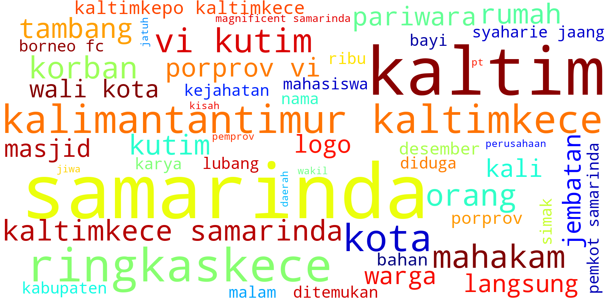
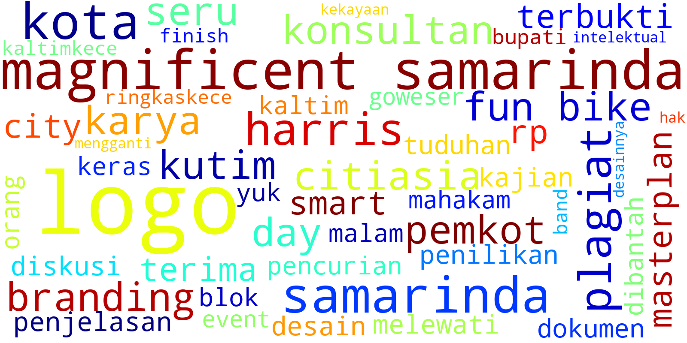
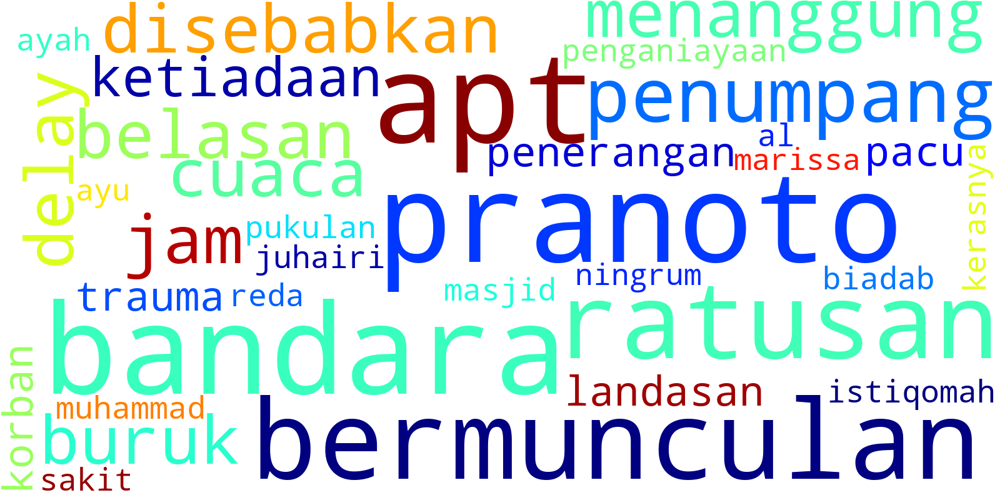
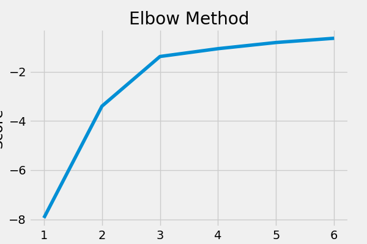
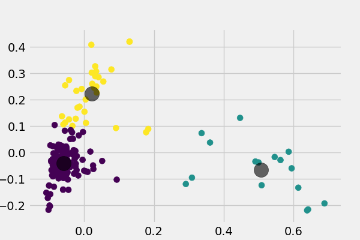

Sebaran kata dalam Twitter @kaltimkece
Frekuensi kata dalam Twitter @kaltimkece

Frekuensi kata sentimen Positif terhadap Twitter @kaltimkece

Frekuensi kata sentimen Negatif terhadap Twitter @kaltimkece

KMeans Elbow method terhadap Twitter @kaltimkece

Sebaran titik sentimen Twitter @kaltimkece
